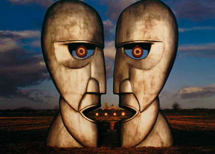

The Division Bell
- N.º Título Compositor(es) Vocais Duração
- 1. "Cluster One" Gilmour, Wright Instrumental 5:58
- 2. "What Do You Want from Me" Gilmour, Samson, Wright Gilmour 4:21
- 3. "Poles Apart" Gilmour, Samson, Laird-Clowes Gilmour 7:05
- 4. "Marooned" Gilmour, Wright Instrumental 5:29
- 5. "A Great Day for Freedom" Gilmour, Samson Gilmour 4:16
- 6. "Wearing the Inside Out" Anthony Moore, Wright Wright 6:49
- 7. "Take It Back" Ezrin, Gilmour, Samson, Laird-Clowes Gilmour 6:12
- 8. "Coming Back to Life" Gilmour Gilmour 6:19
- 9. "Keep Talking" Gilmour, Samson, Wight Gilmour 6:11
- 10. "Lost for Words" Gilmour, Samson Gilmour 5:14
- 11. "High Hopes" Gilmour, Samson Gilmour 8:31
The Division Bell é o décimo quarto e último álbum de estúdio da banda inglesa de rock progressivo Pink Floyd. O disco foi lançado em 28 de março de 1994 no Reino Unido pela EMI Records e em 5 de abril nos Estados Unidos pela Columbia Records. É o segundo sem o baixista Roger Waters.
Suas canções foram escritas principalmente pelo guitarrista David Gilmour e pelo tecladista Richard Wright e tem como principal tema a falta de comunicação, junto com outras questões como o isolamento, conflitos e autodefesa. Foi gravado em vários estúdios entre 1993 e 1994, incluindo o Britannia Row Studios e o barco-estúdio de David Gilmour, Astoria. A equipe de produção escolheu o produtor Bob Ezrin, o engenheiro Andy Jackson e o saxofonista Dick Parry para trabalharem na obra. A esposa de Gilmour, Polly Samson, coescreveu muitas das letras do álbum e Wright contribui como vocalista principal em um trabalho do Pink Floyd pela primeira vez desde Dark Side of the Moon, de 1973. O disco foi número um no Reino Unido e nos EUA, mas recebeu más críticas. Seu lançamento foi seguido imediatamente por uma turnê nos EUA e na Europa. The Division Bell foi certificado de ouro, platina e dupla platina nos EUA em Junho de 1994, e platina tripla em janeiro de 1999. A canção "Marooned" ganhou um Grammy Award na categoria de "Melhor Performance de Rock Instrumental" em 1995.